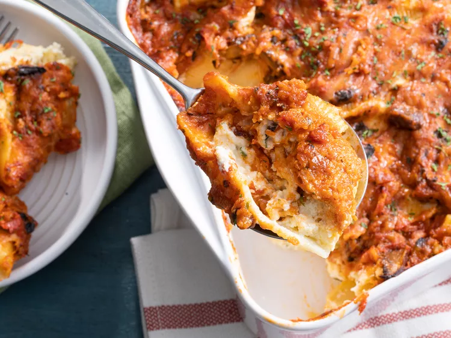

Stuffed Shells

Description
Cheesy stuffed shells are the perfect family-friendly comfort food. They're packed with ingredients you probably already have — and they're easy to customize when you want something new.
- Preheat the oven to 350 degrees F (175 degrees C).
- Bring a large pot of lightly salted water to a boil. Add pasta and cook until tender yet firm to the bite, 8 to 10 minutes. Drain.
- While the pasta is cooking, mix ricotta cheese, 1/2 of the mozzarella cheese, 1/2 of the Parmesan cheese, eggs, parsley, salt, and pepper in a large bowl until well combined.
- Combine pasta sauce and mushrooms in a medium bowl. Add remaining mozzarella and Parmesan cheeses; stir until well combined.
- Stuff shells with ricotta mixture and place in a 9x13-inch baking dish. Pour pasta sauce mixture over the shells.
- Bake in the preheated oven until edges are bubbly and the shells are slightly set, 35 to 60 minutes.
- Serve hot and enjoy!